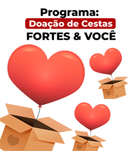
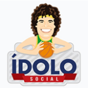
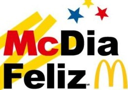
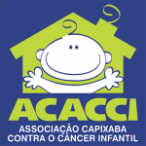

Ações Fortes

A Campanha "Sim, Eu Quero Doar", é o programa de doação de cestas básicas da Fortes com os colaboradores. A Fortes disponibiliza a cesta básica para o colaborador

O Projeto Ídolo Social atende gratuitamente crianças e adolescentes na modalidade basquetebol, promovendo a inclusão social, o desenvolvimento integral

O McDia Feliz é a maior campanha do país em prol de crianças e adolescentes em tratamento de câncer. Nesse dia, toda a venda de Big Mac é destinada a instituições de combate ao câncer

A Associação Capixaba Contra o Câncer Infantil (Acacci) oferece às crianças e aos adolescentes portadores de câncer, bem como às suas famílias, um programa de assistência integral
Editais Abertos
Edital-Projetos-2semestre-2024
10/06/2024
Edital-Projetos-1semestre-2024
07/01/2024
Edital-Projetos-2semestre-2023
11/06/2023
Edital-Projetos-1semestre-2023
05/01/2023
Edital-Projetos-2semestre-2022
20/06/2022